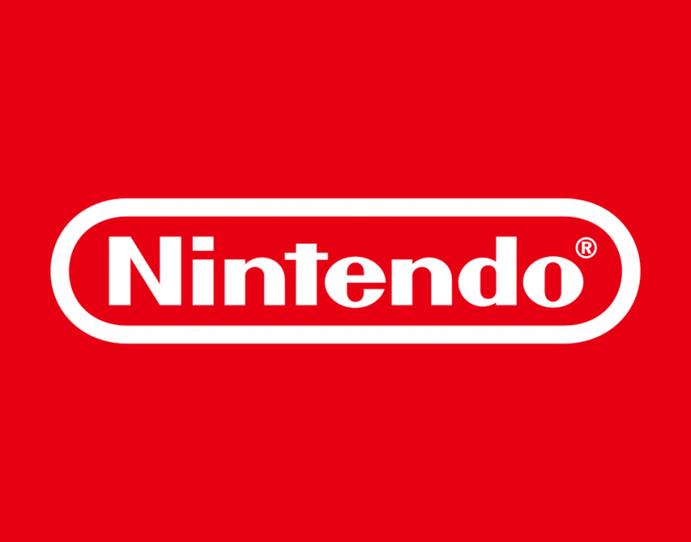

A história da Nintendo
Originalmente criada como empresa de cartas, a Nintendo se tornou a maior empresa de videogames do mundo. Com sede no Japão, a empresa é a maior do ramo quando o assunto é lucros, após mais de 130 anos de existência.
Ao longo de décadas, a Nintendo atuou em ramos diversos, incluindo serviços de táxi e motel, mas falhou em todos. Assim que entrou no ramo dos videogames, então, se entrou uma das maiores empresas da área e do mundo.
Atualmente, a empresa é a mais valiosa do Japão, com valor de mercado de mais de US$ 85 milhões. Além disso, acumula mais de 565 milhões de unidades de hardware e 3,4 bilhões de unidades de software vendidos.
As coisas começaram a mudar em 1929, com a aposentadoria de Fusajiro. O comando da empresa passou para seu genro, Sekiryo Kaneda (Sekiryo Yamauchi, após o casamento), que fez algumas mudanças a partir de 1933. A Nintendo se mudou para um prédio maior e se chamar Yamauchi Nintendo & Co.
As mudanças trouxeram um ritmo de crescimento constante até 1949, quando Sekiryo sofreu um derrame. Para seu lugar, seu neto de apenas 21 anos (Hiroshi Yamauchi) foi convidado.
Foi só em 1969 que a ousadia do novo presidente levou a empresa para a área de jogos e brinquedos. Já sob o nome Nintendo Company desde 1963, lançou inovações como o braço mecânico Ultra Hand e a linha Kousenjuu, composta por “armas de luz”.
A partir da década de 70, jogos como Space Invaders e Pong já faziam sucesso em arcades e no Atari. Sendo assim, a Nintendo também decidiu entrar no ramo e fez uma parceria com a Magnavox. A ideia era vender uma versão do console Odyssey, mas as vendas não foram um sucesso.
Mesmo com as baixas vendas, Hiroshi continuou a investir no ramo. A partir dos conselhos de Masayuki Uemura, realizou uma parceria com a Mitsubishi e lançou o Color-TV Game, em 1977. O dispositivo trazia várias adaptações do sucesso Pong.
Entretanto, foi só em 1980 que a empresa finalmente se fixou no mundo dos games. Neste ano, foi lançado o console portátil Game & Watch, criado por Gunpei Yokoi. Além disso, 1980 marca a chegada da Nintendo nos Estados Unidos. Imediatamente, o Game & Watch se tornou um sucesso.
Mais tarde, Gunpei seria responsável por desenvolver, dentre outros, a franquia Metroid.
Um dos principais nomes na evolução da Nintendo é o de Shigeru Miyamoto. A princípio, ele fora contratado apenas para contribuir com ideias de design no exterior das máquinas de fliperama, mas ajudou a revolucionar o mercado.
Miyamoto foi convidado para atuar na plataforma do jogo Radar Scope e desenvolver algo mais completo. Foi assim, então, que ele desenvolveu o primeiro Donkey Kong. O jogo tinha um conceito simples: resgatar uma moça sequestrada por um gorila. Acredita-se que o jogo tenha sido desenvolvido inspirado nos personagens de Popeye, mas os direitos não foram obtidos e o conceito foi levemente alterado.